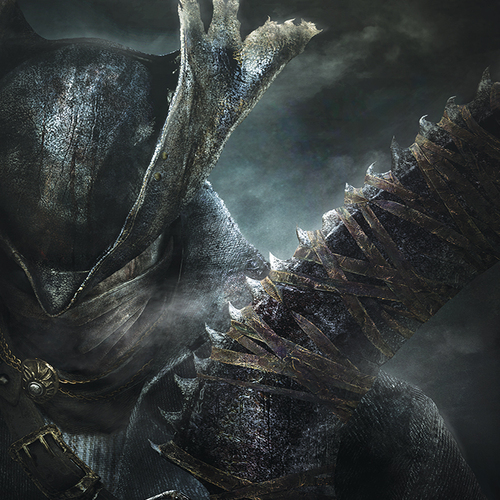
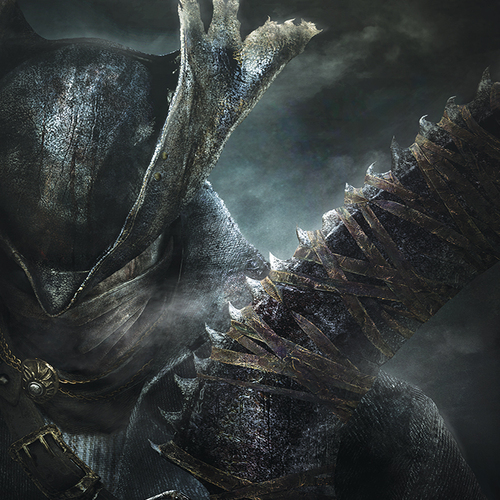

Alan Cahuantzi
I am not crazy! I know he swapped those numbers. I knew it was 1216. One after Magna Carta. As if I could ever make such a mistake. Never. Never! I just – I just couldn’t prove it. He covered his tracks, he got that idiot at the copy shop to lie for him. You think this is something? You think this is bad? This? This chicanery? He’s done worse. That billboard! Are you telling me that a man just happens to fall like that? No! He orchestrated it! Jimmy! He defecated through a sunroof! And I saved him! And I shouldn’t have. I took him into my own firm! What was I thinking? He’ll never change. He’ll never change! Ever since he was 9, always the same! Couldn’t keep his hands out of the cash drawer! But not our Jimmy! Couldn’t be precious Jimmy! Stealing them blind! And HE gets to be a lawyer? What a sick joke! I should’ve stopped him when I had the chance! …And you, you have to stop him! You...
This is getting a little weird, Howard. You want to know what's "weird"? It’s "weird" to offer a job to a man and in return have bowling balls thrown at your car and prostitutes sent to your business lunch. That's "weird". Are you listening to yourself? I don't know what you're into these days, Howard, but prostitutes and, uh, bowling balls? Uh... you sound unhinged. Jimmy, I'm sorry you're in pain. You're sorry? You're sorry? You kill my brother, and you say you're sorry. Let me tell you something. The job offer... it didn't upset me. It amused me. Whew. Big job at the illustrious HHM. Chance to play at the palace? Lil' ole me? I was trying to… You have no idea what's going on. You're a teensy tiny man in a teensy-weensy little bubble! Oh, Jimmy. Ohh, don't you fuckin' "Oh, Jimmy" me. You look down on me?! You pity me?! Walk away. That's right, Howard. You know why I didn't take the job? 'Cause it's too small! I don't care about it! It's nothing to me! It's a bacterium! I travel in worlds you can't even imagine! You can't conceive of what I'm capable of! I'm so far beyond you! I'm like a God in human clothing! Lightning bolts shoot from my fingertips!
Can I come in? Kim? I'm fine. Sorry to, uh, interrupt... this, but I brought you a gift. Your brother and I, we always had a meeting with Mr. Macallan after a big victory. Usually some brilliant summation by Chuck, that goes without saying. So this, this is for you. You earned it. You won. I get it. Of course you both have to play it this way; you're both so very good at it. I was wondering that too. What it's all about. I mean, what do you tell yourselves? What justification makes it okay? Howard's such an asshole that he deserves it? So? What is it? I sided with Chuck too often? I took away your office, put you in doc review. All of the above. "Howard's daddy helped him get to the top, but you both had to struggle." "Howie has so much, we have so little! Let's take him down a peg or two." What allows you to do this to me? Because this isn't just a prank, no. This goes beyond throwing bowling balls on my car. This took planning, coordination, I mean how many weeks? Or was it months? It couldn't have been easy. So tell me: why? Why go through this elaborate plot just to... burn me to the ground? Yeah, sure. The Sandpiper settlement? HHM's share will be substantial, absolutely, even though I humiliated myself. And my clients and peers will whisper that Howard Hamlin's a drug addict. You're right. I've worked my way through worse. Debt. Depression. My marriage falling apart. Oh, yeah. I've been sleeping in the guest house for the better part of a year. Just one more thing good old Howard has to work through. But yes, I will land on my feet. I will be okay. But you? Far from it. You two. You two are soulless. Jimmy, you can't help yourself. Chuck knew it. You were born that way. But you, one of the smartest and most promising human beings I've ever known, and this is the life you choose. Oh good, phony compassion, no, very, very believable, but I'm far from done! You're perfect for each other. You have a piece missing. I- I thought you did it for the money, but, now... it's so clear. Screw the money, you did it for fun. You get off on it. You're, you're like, Leopold and Loeb, two sociopaths. Oh, you know it's true, you just don't have the guts to admit it. I'm gonna make it clear to everyone, because I'm gonna dedicate my life to making sure that everybody knows the truth. Who are you? Oh, is that right? You want some advice? Find better lawyers. What's this about? I uh... I think I'm in the middle of something, uh... there's really no need to-
Experience
Monster Hunter
• Hunted a Pink Rathian solo
• Routinely capture monsters for more rewards instead of killing them
• Crafted my own armor and weapons
Blood Hunter
• Responsible for the fall of the Old Gods
• Traced the origin of the bloodborne disease to befall Yharnam
God of War
• Brought about the Neveending Winter
• Killed Baldur despite him being unkillable
• Played a pivotal role in the ending of the war in Alfheim between the Light and Dark Elves
• Mentored Atreus into a true warrior
Education
UC Riverside
Portfolio
.jpg)
.jpg)

.jpg)
